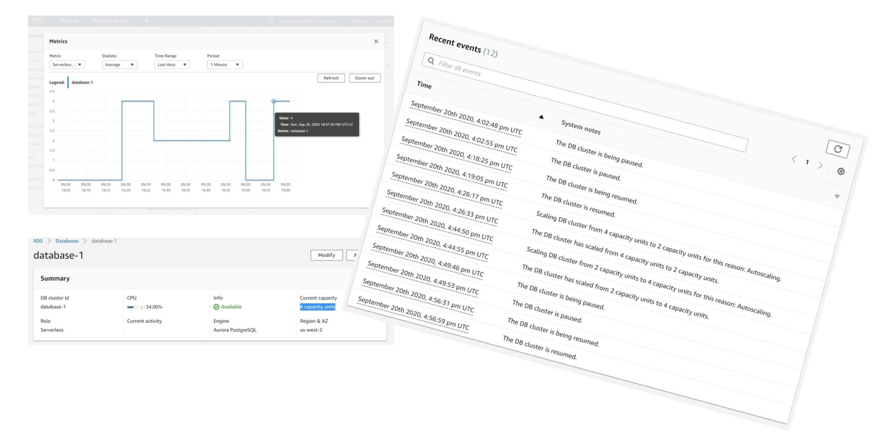
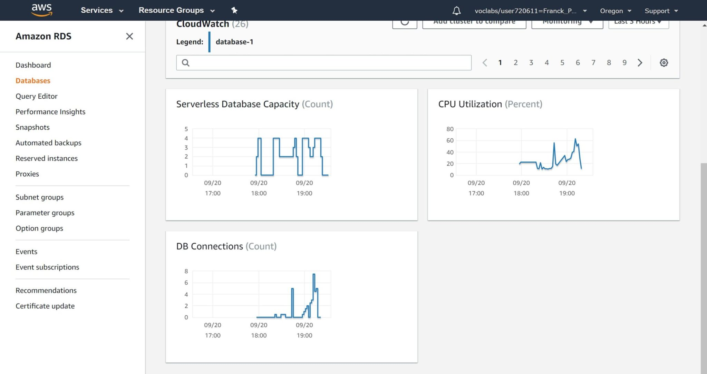
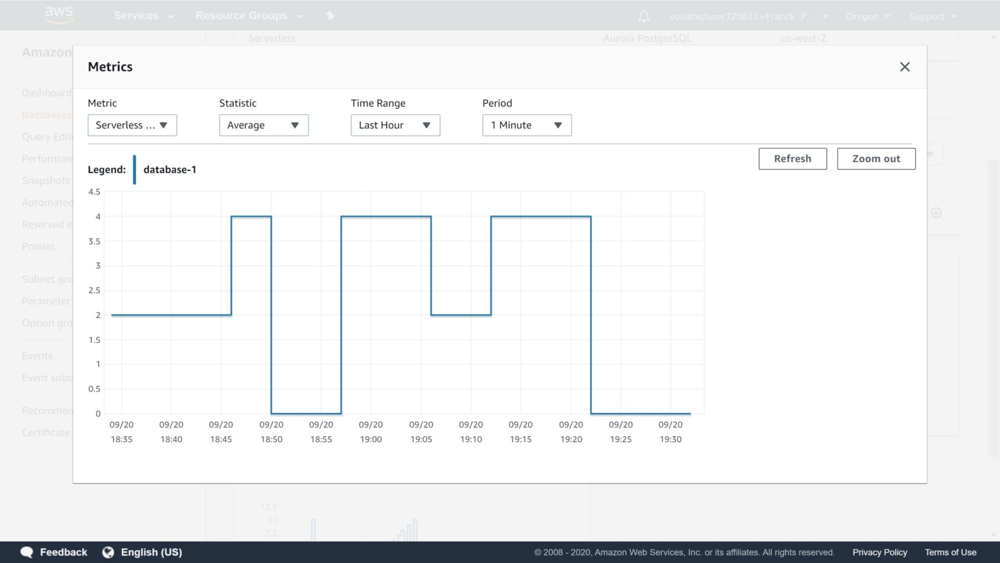

This was first published on https://www.dbi-services.com/blog/amazon-aurora-serverless-postgresql-compatibility/ (2020-09-20)
Republishing here for new followers. The content is related to the versions available at the publication date.
. 
I’ve written a blog post about serverless databases and here is an example of Amazon RDS Aurora PostgreSQL in serverless mode:
When I’ve created the instance (15:55 – CloudWatch is GMT+2 but event log is UTC), it started with 0 capacity unit (18:03), which means that it was paused (you pay for storage only). Then I connected and the instance was resumed (18:19) to its maximum capacity unit (4 here). And then scaled down to the minimum capacity unit (2 here) 5 minutes later (18:27). I’ve run some short activity (pgbench) and the instance scaled-up to the maximum capacity unit (18:45) and went down to zero (paused) after 5 minutes (18:50). Finally, I started some heavy load and the instance resumed to maximum capacity (18:57).
Here is how I’ve created this database:
You see the first limit here: PostgreSQL 10.7 is the only version available for serverless.
About the connectivity, you cannot have public access: the endpoint, which is actually a proxy, is in the VPC
Then you define the minimum and maximum instance size the auto-scaling can play with. The values are in ACU – Amazon Capacity Unit – for which the console displays the memory only. You can go from 2 ACU (4GB RAM) to 384 ACU (768GB RAM) for the PostgreSQL flavor. It goes from 1 ACU (2GB) to 64 ACU (122GB) for the MySQL flavor.
You can imagine the instance that is behind from the equivalent “provisionned” instance size: 4GB RAM is probably a db.t3.medium with 2VCPU burstable, and 768 GB RAM a db.r5.24xlarge with 96 vCPU.
Stopping completely the instance is an option here: “Pause compute capacity after consecutive minutes of inactivity” where you can define the inactive time triggering the pause with a minimum of 5 minutes (the GUI allows less, but that doesn’t work).
Here I’ve waited for 5 minutes before running the following:
# PGPASSWORD=postgres pgbench -h database-1.cluster-czdvjquf08hs.us-west-2.rds.amazonaws.com -p 5432 -U postgres -i -s 8 postgres | ts
the “ts” pipe adds the timestamp to each outout line:
Sep 20 16:56:31 + PGPASSWORD=postgres
Sep 20 16:56:31 + pgbench -h database-1.cluster-czdvjquf08hs.us-west-2.rds.amazonaws.com -p 5432 -U postgres -i -s 8 postgres
Sep 20 16:56:59 creating tables...
Sep 20 16:56:59 10000 tuples done.
Sep 20 16:56:59 20000 tuples done.
Sep 20 16:56:59 30000 tuples done.
Sep 20 16:56:59 40000 tuples done.
Sep 20 16:56:59 50000 tuples done.
Sep 20 16:56:59 60000 tuples done.
Sep 20 16:56:59 70000 tuples done.
...
Sep 20 16:57:02 790000 tuples done.
Sep 20 16:57:02 800000 tuples done.
Sep 20 16:57:02 set primary key...
Sep 20 16:57:03 vacuum...done.You can see the latency to start a stopped instance here: 28 seconds from the connection to the endpoint (a proxy that is still listening when the database is paused) to the first command processed. Of course, your application and network timeouts must be able to wait if you are using the auto-scaling with pause mode (0 ACU). But the advantage is that you don’t pay for any compute instance when it is paused. That’s perfect for databases that are not used often and where you may accept one minute latency for the first connections.
The other important thing to know with serverless Aurora: you should be ready to accept some level of unpredictable performance. The auto-scaling algorithm is based on the CPU usage, memory and number of connections and decide to open your database from different compute instances.
I have run the following to run pgbench for one minute, with a one minute pause in between, increasing the number of concurrent connections each time:
{
set -x
date
PGPASSWORD=postgres pgbench -h database-1.cluster-czdvjquf08hs.us-west-2.rds.amazonaws.com -p 5432 -U postgres -i -s 8 postgres
for i in 1 2 3 4 5 6 7 8 9 10
do
sleep 60
PGPASSWORD=postgres pgbench -h database-1.cluster-czdvjquf08hs.us-west-2.rds.amazonaws.com -p 5432 -U postgres -c $i -T 60 postgres
done
} 2>&1 | ts
This is what you see in the CloudWatch ramp-up around 19:00 (which is 17:00 UTC): 
As you see there was a point where the capacity was not at its maximum despites the homogeneous pattern of 1 minute of inactivity between each 1 minute run. And that shows-up as a drop in number of connections. Here is my pgbench results around that time:
Sep 20 17:09:04 + sleep 60 [25/23724]
Sep 20 17:10:04 + PGPASSWORD=postgres
Sep 20 17:10:04 + pgbench -h database-1.cluster-czdvjquf08hs.us-west-2.rds.amazonaws.com -p 5432 -U postgres -c 7 -T 60 po
stgres
Sep 20 17:10:04 starting vacuum...end.
Sep 20 17:11:04 transaction type: TPC-B (sort of)
Sep 20 17:11:04 scaling factor: 8
Sep 20 17:11:04 query mode: simple
Sep 20 17:11:04 number of clients: 7
Sep 20 17:11:04 number of threads: 1
Sep 20 17:11:04 duration: 60 s
Sep 20 17:11:04 number of transactions actually processed: 32205
Sep 20 17:11:04 tps = 536.501877 (including connections establishing)
Sep 20 17:11:04 tps = 537.634705 (excluding connections establishing)
Sep 20 17:11:04 + for i in 1 2 3 4 5 6 7 8 9 10
Sep 20 17:11:04 + sleep 60
Sep 20 17:12:04 + PGPASSWORD=postgres
Sep 20 17:12:04 + pgbench -h database-1.cluster-czdvjquf08hs.us-west-2.rds.amazonaws.com -p 5432 -U postgres -c 8 -T 60 po
stgres
Sep 20 17:12:05 starting vacuum...end.
Sep 20 17:13:05 transaction type: TPC-B (sort of)
Sep 20 17:13:05 scaling factor: 8
Sep 20 17:13:05 query mode: simple
Sep 20 17:13:05 number of clients: 8
Sep 20 17:13:05 number of threads: 1
Sep 20 17:13:05 duration: 60 s
Sep 20 17:13:05 number of transactions actually processed: 22349
Sep 20 17:13:05 tps = 372.281817 (including connections establishing)
Sep 20 17:13:05 tps = 373.361168 (excluding connections establishing)
Sep 20 17:13:05 + for i in 1 2 3 4 5 6 7 8 9 10
Sep 20 17:13:05 + sleep 60
Sep 20 17:14:05 + PGPASSWORD=postgres
Sep 20 17:14:05 + pgbench -h database-1.cluster-czdvjquf08hs.us-west-2.rds.amazonaws.com -p 5432 -U postgres -c 9 -T 60 p$
stgres
Sep 20 17:14:05 starting vacuum...end.
Sep 20 17:15:05 transaction type: TPC-B (sort of)
Sep 20 17:15:05 scaling factor: 8
Sep 20 17:15:05 query mode: simple
Sep 20 17:15:05 number of clients: 9
Sep 20 17:15:05 number of threads: 1
Sep 20 17:15:05 duration: 60 s
Sep 20 17:15:05 number of transactions actually processed: 24391
Sep 20 17:15:05 tps = 406.361680 (including connections establishing)
Sep 20 17:15:05 tps = 407.628903 (excluding connections establishing)
Sep 20 17:15:05 + for i in 1 2 3 4 5 6 7 8 9 10
Sep 20 17:15:05 + sleep 60
Rather than increasing the number of transactions per seconds, as you expect with more threads, it has decreased for this run. 
Here is a zoom on the capacity unit auto-scaling:
How does it work? The endpoint you connect to, on port 5432, is actually a proxy which can redirect you to the read-write instance. If no instance is up (the database is paused) it will start one. Aurora storage is shared, even across AZs. If the load changes, it may switch to another instance with a different compute size. In Aurora Serverless, scaling means running on a compute instance with different vCPU and RAM.
In my blog post about serverless databases I compared Amazon with Oracle cloud. This Aurora Serverless runs very differently than the Oracle Autonomous Database for which the compute shape is soft limits only: the database runs as a container (Pluggable Database) within a shared instance (Container Database). And it goes even further: auto-scaling pushes this soft limit higher, to the maximum capacity, and the monitoring feature measures the actual usage. You are billed for the minimum capacity plus this additional usage measured. Amazon Aurora Serverless scales on hard limits only (the instance size) but has the advantage to stop completely all compute resource when you chose the “pause” option.
Of course, limitations, versions, features will probably evolve. But the idea is simple. As with many services, when you want predictable performance you choose “provisioned” services where the resources are always up and available. The non-serverless Aurora is the “provisioned” one here. When you want to reduce the cost, you must accept that the resources are used by others when you don’t need them. It is cheaper but may introduce some latency with you need them again. Cloud is elastic: you choose.
{kind=link}
{kind=link}
{kind=link}